Chapter 11 Supervised learning
In this chapter, we will extend our discussion on predictive modeling to include many other models that are not based on regression. The framework for model evaluation that we developed in Chapter 10 will remain useful.
We continue with the example about high earners in the 1994 United States Census.
library(tidyverse)
library(mdsr)
url <-
"http://archive.ics.uci.edu/ml/machine-learning-databases/adult/adult.data"
census <- read_csv(
url,
col_names = c(
"age", "workclass", "fnlwgt", "education",
"education_1", "marital_status", "occupation", "relationship",
"race", "sex", "capital_gain", "capital_loss", "hours_per_week",
"native_country", "income"
)
) %>%
mutate(income = factor(income))
library(tidymodels)
set.seed(364)
n <- nrow(census)
census_parts <- census %>%
initial_split(prop = 0.8)
train <- census_parts %>% training()
test <- census_parts %>% testing()
pi_bar <- train %>%
count(income) %>%
mutate(pct = n / sum(n)) %>%
filter(income == ">50K") %>%
pull(pct)11.1 Non-regression classifiers
The classifiers we built in Chapter 10 were fit using logistic regression. These models were smooth, in that they are based on continuous parametric functions. The models we explore in this chapter are not necessarily continuous, nor are they necessarily expressed as parametric functions.
11.1.1 Decision trees
A decision tree (also known as a classification and regression tree16 or “CART”) is a tree-like flowchart that assigns class labels to individual observations. Each branch of the tree separates the records in the data set into increasingly “pure” (i.e., homogeneous) subsets, in the sense that they are more likely to share the same class label.
How do we construct these trees? First, note that the number of possible decision trees grows exponentially with respect to the number of variables \(p\). In fact, it has been proven that an efficient algorithm to determine the optimal decision tree almost certainly does not exist (Hyafil and Rivest 1976).17 The lack of a globally optimal algorithm means that there are several competing heuristics for building decision trees that employ greedy (i.e., locally optimal) strategies. While the differences among these algorithms can mean that they will return different results (even on the same data set), we will simplify our presentation by restricting our discussion to recursive partitioning decision trees. One R package that builds these decision trees is called rpart, which works in conjunction with tidymodels.
The partitioning in a decision tree follows Hunt’s algorithm, which is itself recursive. Suppose that we are somewhere in the decision tree, and that \(D_t = (y_t, \mathbf{X}_t)\) is the set of records that are associated with node \(t\) and that \(\{y_1, y_2\}\) are the available class labels for the response variable.18 Then:
- If all records in \(D_t\) belong to a single class, say, \(y_1\), then \(t\) is a leaf node labeled as \(y_1\).
- Otherwise, split the records into at least two child nodes, in such a way that the purity of the new set of nodes exceeds some threshold. That is, the records are separated more distinctly into groups corresponding to the response class. In practice, there are several competitive methods for optimizing the purity of the candidate child nodes, and—as noted above—we don’t know the optimal way of doing this.
A decision tree works by running Hunt’s algorithm on the full training data set.
What does it mean to say that a set of records is “purer” than another set? Two popular methods for measuring the purity of a set of candidate child nodes are the Gini coefficient and the information gain. Both are implemented in rpart, which uses the Gini measurement by default. If \(w_i(t)\) is the fraction of records belonging to class \(i\) at node \(t\), then
\[ Gini(t) = 1 - \sum_{i=1}^{2} (w_i(t))^2 \, , \qquad Entropy(t) = - \sum_{i=1}^2 w_i(t) \cdot \log_2 w_i(t) \] The information gain is the change in entropy. The following example should help to clarify how this works in practice.
mod_dtree <- decision_tree(mode = "classification") %>%
set_engine("rpart") %>%
fit(income ~ capital_gain, data = train)
split_val <- mod_dtree$fit$splits %>%
as_tibble() %>%
pull(index)
Let’s consider the optimal split for income using only the variable capital_gain, which measures the amount each person paid in capital gains taxes. According to our tree, the optimal split occurs for those paying more than $5,119 in capital gains.
mod_dtreeparsnip model object
Fit time: 86ms
n= 26048
node), split, n, loss, yval, (yprob)
* denotes terminal node
1) root 26048 6280 <=50K (0.759 0.241)
2) capital_gain< 5.12e+03 24785 5090 <=50K (0.795 0.205) *
3) capital_gain>=5.12e+03 1263 67 >50K (0.053 0.947) *Although nearly 79% of those who paid less than $5,119 in capital gains tax made less than $50k, about 95% of those who paid more than $5,119 in capital gains tax made more than $50k. Thus, splitting (partitioning) the records according to this criterion helps to divide them into relatively purer subsets. We can see this distinction geometrically as we divide the training records in Figure 11.1.
train_plus <- train %>%
mutate(hi_cap_gains = capital_gain >= split_val)
ggplot(data = train_plus, aes(x = capital_gain, y = income)) +
geom_count(
aes(color = hi_cap_gains),
position = position_jitter(width = 0, height = 0.1),
alpha = 0.5
) +
geom_vline(xintercept = split_val, color = "dodgerblue", lty = 2) +
scale_x_log10(labels = scales::dollar)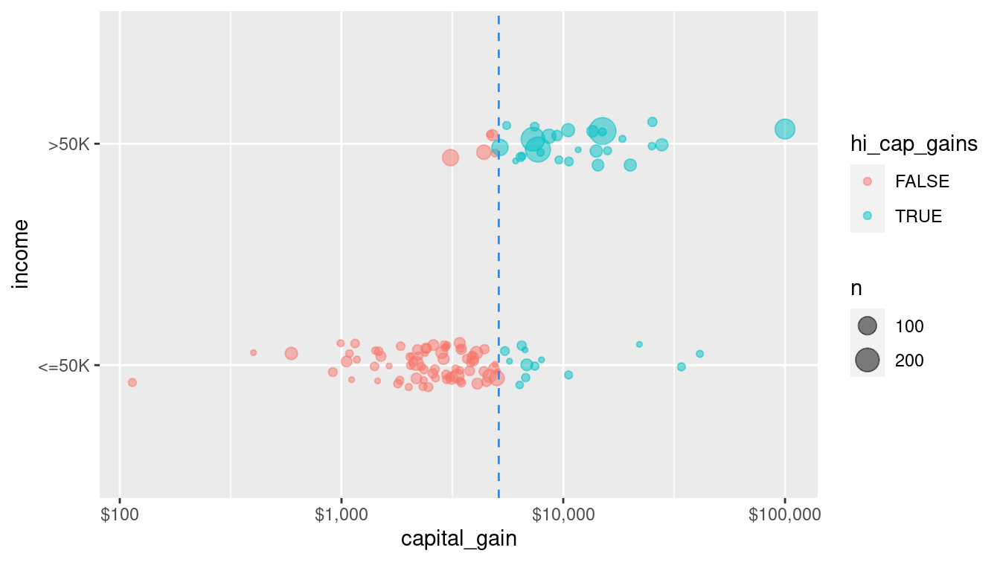
Figure 11.1: A single partition of the census data set using the capital gain variable to determine the split. Color and the vertical line at $5,119 in capital gains tax indicate the split. If one paid more than this amount, one almost certainly made more than $50,000 in income. On the other hand, if one paid less than this amount in capital gains, one almost certainly made less than $50,000.
Comparing Figure 11.1 to Figure 10.1 reveals how the non-parametric decision tree models differs geometrically from the parametric logistic regression model. In this case, the perfectly vertical split achieved by the decision tree is a mathematical impossibility for the logistic regression model.
Thus, this decision tree uses a single variable (capital_gain) to partition the data set into two parts: those who paid more than $5,119 in capital gains, and those who did not. For the former—who make up 0.952 of all observations—we get 79.5% right by predicting that they made less than $50k. For the latter, we get 94.7% right by predicting that they made more than $50k. Thus, our overall accuracy jumps to 80.2%, easily besting the 75.9% in the null model. Note that this performance is comparable to the performance of the single variable logistic regression model from Chapter 10.
How did the algorithm know to pick $5,119 as the threshold value? It tried all of the sensible values, and this was the one that lowered the Gini coefficient the most. This can be done efficiently, since thresholds will always be between actual values of the splitting variable, and thus there are only \(O(n)\) possible splits to consider. (We use Big O notation to denote the complexity of an algorithm, where \(O(n)\) means that the number of calculations scales with the sample size.)
So far, we have only used one variable, but we can build a decision tree for income in terms of all of the other variables in the data set. (We have left out native_country because it is a categorical variable with many levels, which can make some learning models computationally infeasible.)
form <- as.formula(
"income ~ age + workclass + education + marital_status +
occupation + relationship + race + sex +
capital_gain + capital_loss + hours_per_week"
)mod_tree <- decision_tree(mode = "classification") %>%
set_engine("rpart") %>%
fit(form, data = train)
mod_treeparsnip model object
Fit time: 1.2s
n= 26048
node), split, n, loss, yval, (yprob)
* denotes terminal node
1) root 26048 6280 <=50K (0.7587 0.2413)
2) relationship=Not-in-family,Other-relative,Own-child,Unmarried 14231 941 <=50K (0.9339 0.0661)
4) capital_gain< 7.07e+03 13975 696 <=50K (0.9502 0.0498) *
5) capital_gain>=7.07e+03 256 11 >50K (0.0430 0.9570) *
3) relationship=Husband,Wife 11817 5340 <=50K (0.5478 0.4522)
6) education=10th,11th,12th,1st-4th,5th-6th,7th-8th,9th,Assoc-acdm,Assoc-voc,HS-grad,Preschool,Some-college 8294 2770 <=50K (0.6655 0.3345)
12) capital_gain< 5.1e+03 7875 2360 <=50K (0.6998 0.3002) *
13) capital_gain>=5.1e+03 419 9 >50K (0.0215 0.9785) *
7) education=Bachelors,Doctorate,Masters,Prof-school 3523 953 >50K (0.2705 0.7295) *In this more complicated tree, the optimal first split now does not involve capital_gain, but rather relationship.
A plot (shown in Figure 11.2) that is more informative is available through the partykit package, which contains a series of functions for working with decision trees.
library(rpart)
library(partykit)
plot(as.party(mod_tree$fit))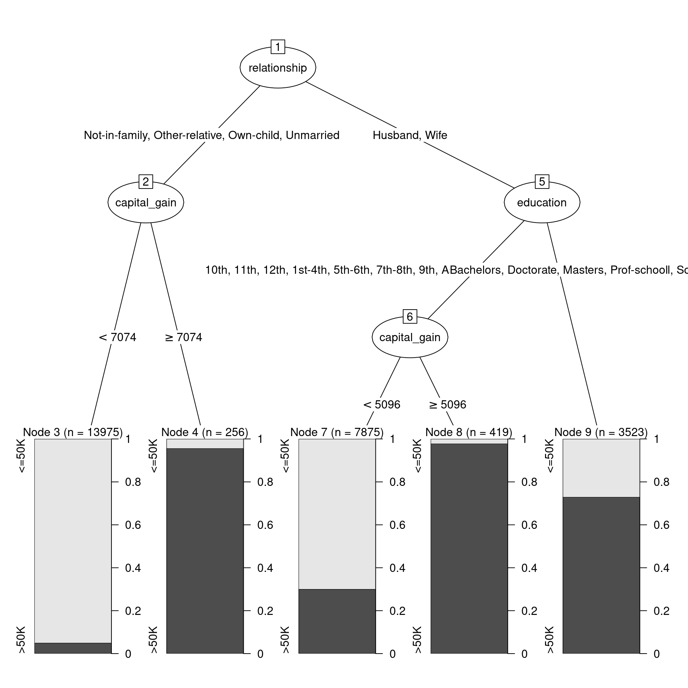
Figure 11.2: Decision tree for income using the census data.
Figure 11.2 shows the decision tree itself, while Figure 11.3 shows how the tree recursively partitions the original data. Here, the first question is whether relationship status is Husband or Wife. If not, then a capital gains threshold of $7,073.50 is used to determine one’s income. 95.7% of those who paid more than the threshold earned more than $50k, but 95% of those who paid less than the threshold did not. For those whose relationship status was Husband or Wife, the next question was whether you had a college degree. If so, then the model predicts with 72.9% accuracy that you made more than $50k. If not, then again we ask about capital gains tax paid, but this time the threshold is $5,095.50. 97.9% of those who were neither a husband nor a wife, and had no college degree, but paid more than that amount in capital gains tax, made more than $50k. On the other hand, 70% of those who paid below the threshold made less than $50k.
train_plus <- train_plus %>%
mutate(
husband_or_wife = relationship %in% c("Husband", "Wife"),
college_degree = husband_or_wife & education %in%
c("Bachelors", "Doctorate", "Masters", "Prof-school")
) %>%
bind_cols(
predict(mod_tree, new_data = train, type = "class")
) %>%
rename(income_dtree = .pred_class)
cg_splits <- tribble(
~husband_or_wife, ~vals,
TRUE, 5095.5,
FALSE, 7073.5
)ggplot(data = train_plus, aes(x = capital_gain, y = income)) +
geom_count(
aes(color = income_dtree, shape = college_degree),
position = position_jitter(width = 0, height = 0.1),
alpha = 0.5
) +
facet_wrap(~ husband_or_wife) +
geom_vline(
data = cg_splits, aes(xintercept = vals),
color = "dodgerblue", lty = 2
) +
scale_x_log10()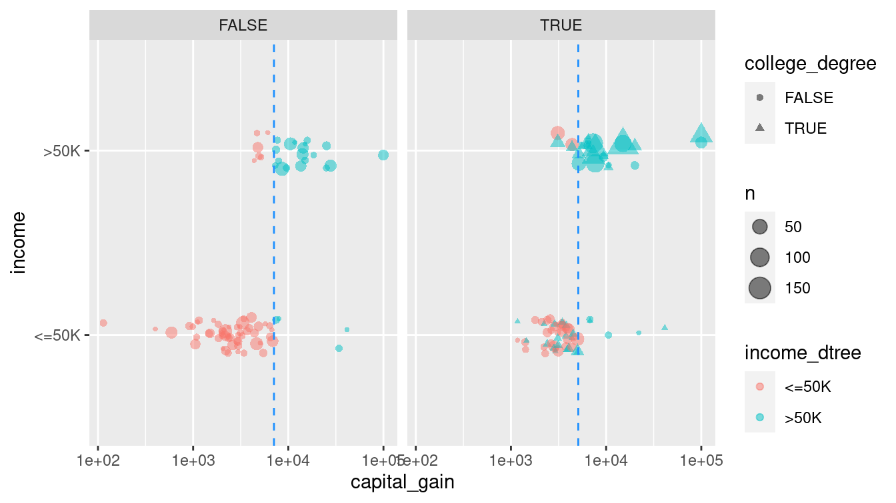
Figure 11.3: Graphical depiction of the full recursive partitioning decision tree classifier. On the left, those whose relationship status is neither ‘Husband’ nor ‘Wife’ are classified based on their capital gains paid. On the right, not only is the capital gains threshold different, but the decision is also predicated on whether the person has a college degree.
Since there are exponentially many trees, how did the algorithm know to pick this one? The complexity parameter controls whether to keep or prune possible splits. That is, the algorithm considers many possible splits (i.e., new branches on the tree), but prunes them if they do not sufficiently improve the predictive power of the model (i.e., bear fruit). By default, each split has to decrease the error by a factor of 1%. This will help to avoid overfitting (more on that later). Note that as we add more splits to our model, the relative error decreases.
printcp(mod_tree$fit)
Classification tree:
`rpart::rpart`(data = train)
Variables actually used in tree construction:
[1] capital_gain education relationship
Root node error: 6285/26048 = 0.241
n= 26048
CP nsplit rel error xerror xstd
1 0.1286 0 1.000 1.000 0.01099
2 0.0638 2 0.743 0.743 0.00985
3 0.0372 3 0.679 0.679 0.00950
4 0.0100 4 0.642 0.642 0.00929We can also use the model evaluation metrics we developed in Chapter 10. Namely, the confusion matrix and the accuracy.
library(yardstick)
pred <- train %>%
select(income) %>%
bind_cols(
predict(mod_tree, new_data = train, type = "class")
) %>%
rename(income_dtree = .pred_class)
confusion <- pred %>%
conf_mat(truth = income, estimate = income_dtree)
confusion Truth
Prediction <=50K >50K
<=50K 18790 3060
>50K 973 3225accuracy(pred, income, income_dtree)# A tibble: 1 × 3
.metric .estimator .estimate
<chr> <chr> <dbl>
1 accuracy binary 0.845In this case, the accuracy of the decision tree classifier is now 84.5%, a considerable improvement over the null model. Again, this is comparable to the analogous logistic regression model we build using this same set of variables in Chapter 10. Figure 11.4 displays the confusion matrix for this model.
autoplot(confusion) +
geom_label(
aes(
x = (xmax + xmin) / 2,
y = (ymax + ymin) / 2,
label = c("TN", "FP", "FN", "TP")
)
)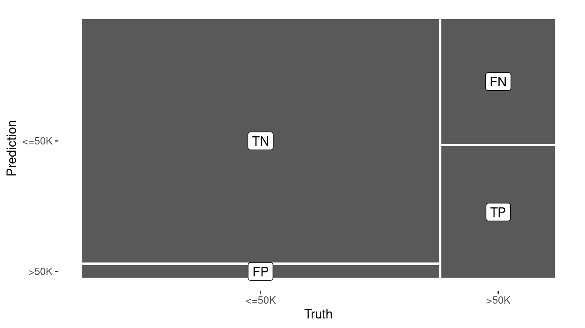
Figure 11.4: Visual summary of the predictive accuracy of our decision tree model. The largest rectangle represents the cases that are true negatives.
11.1.1.1 Tuning parameters
The decision tree that we built previously was based on the default parameters. Most notably, our tree was pruned so that only splits that decreased the overall lack of fit by 1% were retained. If we lower this threshold to 0.2%, then we get a more complex tree.
mod_tree2 <- decision_tree(mode = "classification") %>%
set_engine("rpart", control = rpart.control(cp = 0.002)) %>%
fit(form, data = train)Can you find the accuracy of this more complex tree. Is it more or less accurate than our original tree?
11.1.2 Random forests
A natural extension of a decision tree is a random forest. A random forest is collection of decision trees that are aggregated by majority rule. In a sense, a random forest is like a collection of bootstrapped (see Chapter 9) decision trees. A random forest is constructed by:
- Choosing the number of decision trees to grow (controlled by the
treesargument) and the number of variables to consider in each tree (mtry) - Randomly selecting the rows of the data frame with replacement
- Randomly selecting
mtryvariables from the data frame - Building a decision tree on the resulting data set
- Repeating this procedure
treestimes
A prediction for a new observation is made by taking the majority rule from all of the decision trees in the forest. Random forests are available in R via the randomForest package. They can be very effective but are sometimes computationally expensive.
mod_forest <- rand_forest(
mode = "classification",
mtry = 3,
trees = 201
) %>%
set_engine("randomForest") %>%
fit(form, data = train)
pred <- pred %>%
bind_cols(
predict(mod_forest, new_data = train, type = "class")
) %>%
rename(income_rf = .pred_class)
pred %>%
conf_mat(income, income_rf) Truth
Prediction <=50K >50K
<=50K 19199 1325
>50K 564 4960pred %>%
accuracy(income, income_rf)# A tibble: 1 × 3
.metric .estimator .estimate
<chr> <chr> <dbl>
1 accuracy binary 0.927
Because each tree in a random forest uses a different set of variables, it is possible to keep track of which variables seem to be the most consistently influential. This is captured by the notion of importance. While—unlike p-values in a regression model—there is no formal statistical inference here, importance plays an analogous role in that it may help to generate hypotheses. Here, we see that capital_gain and age seem to be influential, while race and sex do not.
randomForest::importance(mod_forest$fit) %>%
as_tibble(rownames = "variable") %>%
arrange(desc(MeanDecreaseGini))# A tibble: 11 × 2
variable MeanDecreaseGini
<chr> <dbl>
1 capital_gain 1178.
2 age 1108.
3 relationship 1009.
4 education 780.
5 marital_status 671.
6 hours_per_week 667.
7 occupation 625.
8 capital_loss 394.
9 workclass 311.
10 race 131.
11 sex 99.3
The results are put into a tibble (simple data frame) to facilitate further wrangling.
A model object of class randomForest also has a predict() method for making new predictions.
11.1.2.1 Tuning parameters
Hastie, Tibshirani, and Friedman (2009) recommend using \(\sqrt{p}\) variables in each classification tree (and \(p/3\) for each regression tree), and this is the default behavior in randomForest. However, this is a parameter that can be tuned for a particular application. The number of trees is another parameter that can be tuned—we simply picked a reasonably large odd number.
11.1.3 Nearest neighbor
Thus far, we have focused on using data to build models that we can then use to predict outcomes on a new set of data. A slightly different approach is offered by lazy learners, which seek to predict outcomes without constructing a “model.” A very simple, yet widely-used approach is \(k\)-nearest neighbor.
Recall that data with \(p\) attributes (explanatory variables) are manifest as points in a \(p\)-dimensional space. The Euclidean distance between any two points in that space can be easily calculated in the usual way as the square root of the sum of the squared deviations. Thus, it makes sense to talk about the distance between two points in this \(p\)-dimensional space, and as a result, it makes sense to talk about the distance between two observations (rows of the data frame). Nearest-neighbor classifiers exploit this property by assuming that observations that are “close” to each other probably have similar outcomes.
Suppose we have a set of training data \((\mathbf{X}, y) \in \mathbb{R}^{n \times p} \times \mathbb{R}^n\). For some positive integer \(k\), a \(k\)-nearest neighbor algorithm classifies a new observation \(x^*\) by:
- Finding the \(k\) observations in the training data \(\mathbf{X}\) that are closest to \(x^*\), according to some distance metric (usually Euclidean). Let \(D(x^*) \subseteq (\mathbf{X}, y)\) denote this set of observations.
- For some aggregate function \(f\), computing \(f(y)\) for the \(k\) values of \(y\) in \(D(x^*)\) and assigning this value (\(y^*\)) as the predicted value of the response associated with \(x^*\). The logic is that since \(x^*\) is similar to the \(k\) observations in \(D(x^*)\), the response associated with \(x^*\) is likely to be similar to the responses in \(D(x^*)\). In practice, simply taking the value shared by the majority (or a plurality) of the \(y\)’s is enough.
Note that a \(k\)-NN classifier does not need to process the training data before making new classifications—it can do this on the fly. A \(k\)-NN classifier is provided by the kknn() function in the kknn package.
Note that since the distance metric only makes sense for quantitative variables, we have to restrict our data set to those first.
Setting the scale to TRUE rescales the explanatory variables to have the same standard deviation.
We choose \(k=5\) neighbors for reasons that we explain in the next section.
library(kknn)
# distance metric only works with quantitative variables
train_q <- train %>%
select(income, where(is.numeric), -fnlwgt)
mod_knn <- nearest_neighbor(neighbors = 5, mode = "classification") %>%
set_engine("kknn", scale = TRUE) %>%
fit(income ~ ., data = train_q)
pred <- pred %>%
bind_cols(
predict(mod_knn, new_data = train, type = "class")
) %>%
rename(income_knn = .pred_class)
pred %>%
conf_mat(income, income_knn) Truth
Prediction <=50K >50K
<=50K 18088 2321
>50K 1675 3964pred %>%
accuracy(income, income_knn)# A tibble: 1 × 3
.metric .estimator .estimate
<chr> <chr> <dbl>
1 accuracy binary 0.847\(k\)-NN classifiers are widely used in part because they are easy to understand and code. They also don’t require any pre-processing time. However, predictions can be slow, since the data must be processed at that time.
The usefulness of \(k\)-NN can depend importantly on the geometry of the data. Are the points clustered together? What is the distribution of the distances among each variable? A wider scale on one variable can dwarf a narrow scale on another variable.
11.1.3.1 Tuning parameters
An appropriate choice of \(k\) will depend on the application and the data. Cross-validation can be used to optimize the choice of \(k\). Here, we compute the accuracy for several values of \(k\).
knn_fit <- function(.data, k) {
nearest_neighbor(neighbors = k, mode = "classification") %>%
set_engine("kknn", scale = TRUE) %>%
fit(income ~ ., data = .data)
}
knn_accuracy <- function(mod, .new_data) {
mod %>%
predict(new_data = .new_data) %>%
mutate(income = .new_data$income) %>%
accuracy(income, .pred_class) %>%
pull(.estimate)
}ks <- c(1:10, 15, 20, 30, 40, 50)
knn_tune <- tibble(
k = ks,
mod = map(k, knn_fit, .data = train_q),
train_accuracy = map_dbl(mod, knn_accuracy, .new_data = train_q)
)
knn_tune# A tibble: 5 × 3
k mod train_accuracy
<dbl> <list> <dbl>
1 1 <fit[+]> 0.839
2 5 <fit[+]> 0.847
3 10 <fit[+]> 0.848
4 20 <fit[+]> 0.843
5 40 <fit[+]> 0.839In Figure 11.5, we show how the accuracy decreases as \(k\) increases. That is, if one seeks to maximize the accuracy rate on this data set, then the optimal value of \(k\) is 5.19 We will see why this method of optimizing the value of the parameter \(k\) is not robust when we learn about cross-validation below.
ggplot(data = knn_tune, aes(x = k, y = train_accuracy)) +
geom_point() +
geom_line() +
ylab("Accuracy rate")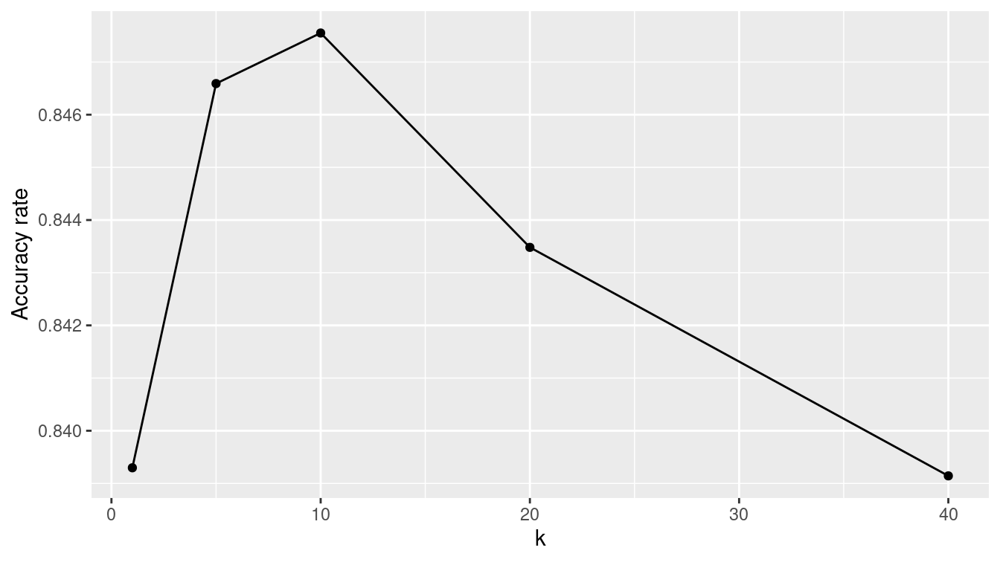
Figure 11.5: Performance of nearest-neighbor classifier for different choices of \(k\) on census training data.
11.1.4 Naïve Bayes
Another relatively simple classifier is based on Bayes Theorem. Bayes theorem is a very useful result from probability that allows conditional probabilities to be calculated from other conditional probabilities. It states:
\[ \Pr(y|x) = \frac{\Pr(xy)}{\Pr(x)} = \frac{\Pr(x|y) \Pr(y)}{\Pr(x )} \,. \]
How does this relate to a naïve Bayes classifier? Suppose that we have a binary response variable \(y\) and we want to classify a new observation \(x^*\) (recall that \(x\) is a vector). Then if we can compute that the conditional probability \(\Pr(y = 1 | x^*) > \Pr(y=0 | x^*)\), we have evidence that \(y=1\) is a more likely outcome for \(x^*\) than \(y=0\). This is the crux of a naïve Bayes classifier. In practice, how we arrive at the estimates \(\Pr(y=1|x^*)\) are based on Bayes theorem and estimates of conditional probabilities derived from the training data \((\mathbf{X}, y)\).
Consider the first person in the training data set. This is a 39-year-old white male with a bachelor’s degree working for a state government in a clerical role. In reality, this person made less than $50,000.
train %>%
as.data.frame() %>%
head(1) age workclass fnlwgt education education_1 marital_status
1 31 Private 291052 Some-college 10 Married-civ-spouse
occupation relationship race sex capital_gain capital_loss
1 Adm-clerical Husband White Male 0 2051
hours_per_week native_country income
1 40 United-States <=50KThe naïve Bayes classifier would make a prediction for this person based on the probabilities observed in the data. For example, in this case the probability \(\Pr(\text{male} | \text{> 50k})\) of being male given that you had high income is 0.845, while the unconditional probability of being male is \(\Pr(\text{male}) = 0.670\). We know that the overall probability of having high income is \(\Pr(\text{> 50k}) =\) 0.241. Bayes’s rule tells us that the resulting probability of having high income given that one is male is:
\[
\Pr(\text{> 50k} | \text{male}) = \frac{\Pr(\text{male} | \text{> 50k}) \cdot \Pr(\text{> 50k})}{\Pr(\text{male})} = \frac{0.845 \cdot 0.243}{0.670} = 0.306 \,.
\]
This simple example illustrates the case where we have a single explanatory variable (e.g., sex), but the naïve Bayes model extends to multiple variables by making the sometimes overly simplistic assumption that the explanatory variables are conditionally independent (hence the name “naïve”).
A naïve Bayes classifier is provided in R by the naive_Bayes() function from the discrim package. Note that like lm() and glm(), a naive_Bayes() object has a predict() method.
library(discrim)
mod_nb <- naive_Bayes(mode = "classification") %>%
set_engine("klaR") %>%
fit(form, data = train)
pred <- pred %>%
bind_cols(
predict(mod_nb, new_data = train, type = "class")
) %>%
rename(income_nb = .pred_class)
accuracy(pred, income, income_nb)# A tibble: 1 × 3
.metric .estimator .estimate
<chr> <chr> <dbl>
1 accuracy binary 0.824
11.1.5 Artificial neural networks
An artificial neural network is yet another classifier. While the impetus for the artificial neural network comes from a biological understanding of the brain, the implementation here is entirely mathematical.
mod_nn <- mlp(mode = "classification", hidden_units = 5) %>%
set_engine("nnet") %>%
fit(form, data = train)
A neural network is a directed graph (see Chapter 20) that proceeds in stages. First, there is one node for each input variable. In this case, because each factor level counts as its own variable, there are 57 input variables.
These are shown on the left in Figure 11.6. Next, there are a series of nodes specified as a hidden layer.
In this case, we have specified five nodes for the hidden layer.
These are shown in the middle of Figure 11.6, and each of the input variables are connected to these hidden nodes. Each of the hidden nodes is connected to the single output variable. In addition, nnet() adds two control nodes, the first of which is connected to the five hidden nodes, and the latter is connected to the output node. The total number of edges is thus \(pk + k + k + 1\), where \(k\) is the number of hidden nodes. In this case, there are \(57 \cdot 5 + 5 + 5 + 1 = 296\) edges.
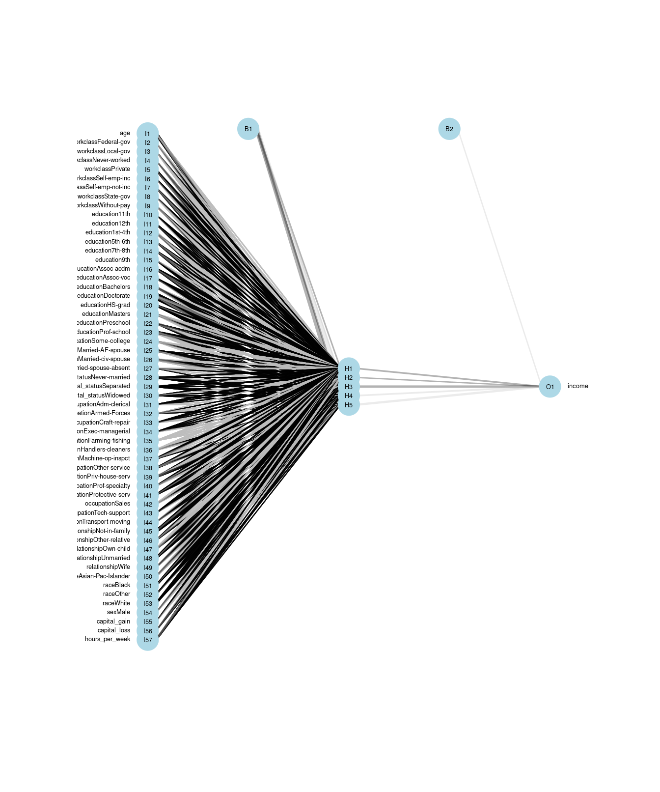
Figure 11.6: Visualization of an artificial neural network. The 57 input variables are shown on the left, with the five hidden nodes in the middle, and the single output variable on the right.
The algorithm iteratively searches for the optimal set of weights for each edge. Once the weights are computed, the neural network can make predictions for new inputs by running these values through the network.
pred <- pred %>%
bind_cols(
predict(mod_nn, new_data = train, type = "class")
) %>%
rename(income_nn = .pred_class)
accuracy(pred, income, income_nn)# A tibble: 1 × 3
.metric .estimator .estimate
<chr> <chr> <dbl>
1 accuracy binary 0.84411.1.6 Ensemble methods
The benefit of having multiple classifiers is that they can be easily combined into a single classifier. Note that there is a real probabilistic benefit to having multiple prediction systems, especially if they are independent. For example, if you have three independent classifiers with error rates \(\epsilon_1, \epsilon_2\), and \(\epsilon_3\), then the probability that all three are wrong is \(\prod_{i=1}^3 \epsilon_i\). Since \(\epsilon_i < 1\) for all \(i\), this probability is lower than any of the individual error rates. Moreover, the probability that at least one of the classifiers is correct is \(1 - \prod_{i=1}^3 \epsilon_i\), which will get closer to 1 as you add more classifiers—even if you have not improved the individual error rates!
Consider combining the five classifiers that we have built previously. Suppose that we build an ensemble classifier by taking the majority vote from each. Does this ensemble classifier outperform any of the individual classifiers? We can use the rowwise() and c_across() functions to easily compute these values.
pred <- pred %>%
rowwise() %>%
mutate(
rich_votes = sum(c_across(contains("income_")) == ">50K"),
income_ensemble = factor(ifelse(rich_votes >= 3, ">50K", "<=50K"))
) %>%
ungroup()
pred %>%
select(-rich_votes) %>%
pivot_longer(
cols = -income,
names_to = "model",
values_to = "prediction"
) %>%
group_by(model) %>%
summarize(accuracy = accuracy_vec(income, prediction)) %>%
arrange(desc(accuracy))# A tibble: 6 × 2
model accuracy
<chr> <dbl>
1 income_rf 0.927
2 income_ensemble 0.884
3 income_knn 0.847
4 income_dtree 0.845
5 income_nn 0.844
6 income_nb 0.824In this case, the ensemble model achieves a 88.4% accuracy rate, which is slightly lower than our random forest. Thus, ensemble methods are a simple but effective way of hedging your bets.
11.2 Parameter tuning
In Section 11.1.3, we showed how after a certain point, the accuracy rate on the training data of the \(k\)-NN model increased as \(k\) increased. That is, as information from more neighbors—who are necessarily farther away from the target observation—was incorporated into the prediction for any given observation, those predictions got worse. This is not surprising, since the actual observation is in the training data set and that observation necessarily has distance 0 from the target observation. The error rate is not zero for \(k=1\) likely due to many points having the exact same coordinates in this five-dimensional space.
However, as seen in Figure 11.7, the story is different when evaluating the \(k\)-NN model on the testing set. Here, the truth is not in the training set, and so pooling information across more observations leads to better predictions—at least for a while. Again, this should not be surprising—we saw in Chapter 9 how means are less variable than individual observations. Generally, one hopes to minimize the misclassification rate on data that the model has not seen (i.e., the testing data) without introducing too much bias. In this case, that point occurs somewhere between \(k=5\) and \(k=10\). We can see this in Figure 11.7, since the accuracy on the testing data set improves rapidly up to \(k=5\), but then very slowly for larger values of \(k\).
test_q <- test %>%
select(income, where(is.numeric), -fnlwgt)
knn_tune <- knn_tune %>%
mutate(test_accuracy = map_dbl(mod, knn_accuracy, .new_data = test_q))
knn_tune %>%
select(-mod) %>%
pivot_longer(-k, names_to = "type", values_to = "accuracy") %>%
ggplot(aes(x = k, y = accuracy, color = factor(type))) +
geom_point() +
geom_line() +
ylab("Accuracy") +
scale_color_discrete("Set")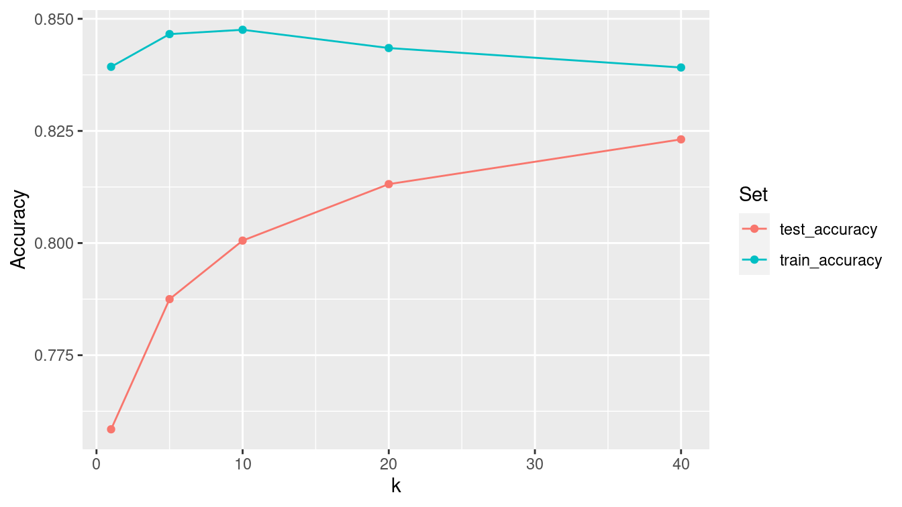
Figure 11.7: Performance of nearest-neighbor classifier for different choices of \(k\) on census training and testing data.
11.3 Example: Evaluation of income models redux
Just as we did in Section 10.3.5, we should evaluate these new models on both the training and testing sets.
First, we build the null model that simply predicts that everyone makes $50,000 with the same probability, regardless of the explanatory variables. (See Appendix E for an introduction to logistic regression.) We’ll add this to the list of models that we built previously in this chapter.
mod_null <- logistic_reg(mode = "classification") %>%
set_engine("glm") %>%
fit(income ~ 1, data = train)
mod_log_all <- logistic_reg(mode = "classification") %>%
set_engine("glm") %>%
fit(form, data = train)
mods <- tibble(
type = c(
"null", "log_all", "tree", "forest",
"knn", "neural_net", "naive_bayes"
),
mod = list(
mod_null, mod_log_all, mod_tree, mod_forest,
mod_knn, mod_nn, mod_nb
)
)While each of the models we have fit have different classes in R (see B.3.6), each of those classes has a predict() method that will generate predictions.
map(mods$mod, class)[[1]]
[1] "_glm" "model_fit"
[[2]]
[1] "_glm" "model_fit"
[[3]]
[1] "_rpart" "model_fit"
[[4]]
[1] "_randomForest" "model_fit"
[[5]]
[1] "_train.kknn" "model_fit"
[[6]]
[1] "_nnet.formula" "model_fit"
[[7]]
[1] "_NaiveBayes" "model_fit" Thus, we can iterate through the list of models and apply the appropriate predict() method to each object.
mods <- mods %>%
mutate(
y_train = list(pull(train, income)),
y_test = list(pull(test, income)),
y_hat_train = map(
mod,
~pull(predict(.x, new_data = train, type = "class"), .pred_class)
),
y_hat_test = map(
mod,
~pull(predict(.x, new_data = test, type = "class"), .pred_class)
)
)
mods# A tibble: 7 × 6
type mod y_train y_test y_hat_train y_hat_test
<chr> <list> <list> <list> <list> <list>
1 null <fit[+]> <fct [26,048… <fct [6,513… <fct [26,048… <fct [6,513…
2 log_all <fit[+]> <fct [26,048… <fct [6,513… <fct [26,048… <fct [6,513…
3 tree <fit[+]> <fct [26,048… <fct [6,513… <fct [26,048… <fct [6,513…
4 forest <fit[+]> <fct [26,048… <fct [6,513… <fct [26,048… <fct [6,513…
5 knn <fit[+]> <fct [26,048… <fct [6,513… <fct [26,048… <fct [6,513…
6 neural_net <fit[+]> <fct [26,048… <fct [6,513… <fct [26,048… <fct [6,513…
7 naive_bayes <fit[+]> <fct [26,048… <fct [6,513… <fct [26,048… <fct [6,513…We can also add our majority rule ensemble classifier. First, we write a function that will compute the majority vote when given a list of predictions.
predict_ensemble <- function(x) {
majority <- ceiling(length(x) / 2)
x %>%
data.frame() %>%
rowwise() %>%
mutate(
rich_votes = sum(c_across() == ">50K"),
.pred_class = factor(ifelse(rich_votes >= majority , ">50K", "<=50K"))
) %>%
pull(.pred_class) %>%
fct_relevel("<=50K")
}Next, we use bind_rows() to add an additional row to our models data frame with the relevant information for the ensemble classifier.
ensemble <- tibble(
type = "ensemble",
mod = NA,
y_train = list(predict_ensemble(pull(mods, y_train))),
y_test = list(predict_ensemble(pull(mods, y_test))),
y_hat_train = list(predict_ensemble(pull(mods, y_hat_train))),
y_hat_test = list(predict_ensemble(pull(mods, y_hat_test))),
)
mods <- mods %>%
bind_rows(ensemble)
Now that we have the predictions for each model, we just need to compare them to the truth (y), and tally the results. We can do this using the map2_dbl() function from the purrr package.
mods <- mods %>%
mutate(
accuracy_train = map2_dbl(y_train, y_hat_train, accuracy_vec),
accuracy_test = map2_dbl(y_test, y_hat_test, accuracy_vec),
sens_test = map2_dbl(
y_test,
y_hat_test,
sens_vec,
event_level = "second"
),
spec_test = map2_dbl(y_test,
y_hat_test,
spec_vec,
event_level = "second"
)
)mods %>%
select(-mod, -matches("^y")) %>%
arrange(desc(accuracy_test))# A tibble: 8 × 5
type accuracy_train accuracy_test sens_test spec_test
<chr> <dbl> <dbl> <dbl> <dbl>
1 forest 0.927 0.866 0.628 0.941
2 ensemble 0.875 0.855 0.509 0.963
3 log_all 0.852 0.849 0.598 0.928
4 neural_net 0.844 0.843 0.640 0.906
5 tree 0.845 0.842 0.514 0.945
6 naive_bayes 0.824 0.824 0.328 0.980
7 knn 0.847 0.788 0.526 0.869
8 null 0.759 0.761 0 1 While the random forest performed notably better than the other models on the training set, its accuracy dropped the most on the testing set. We note that even though the \(k\)-NN model slightly outperformed the decision tree on the training set, the decision tree performed better on the testing set. The ensemble model and the logistic regression model performed quite well. In this case, however, the accuracy rates of all models were in the same ballpark on both the testing set.
In Figure 11.8, we compare the ROC curves for all census models on the testing data set.
mods <- mods %>%
filter(type != "ensemble") %>%
mutate(
y_hat_prob_test = map(
mod,
~pull(predict(.x, new_data = test, type = "prob"), `.pred_>50K`)
),
type = fct_reorder(type, sens_test, .desc = TRUE)
)mods %>%
select(type, y_test, y_hat_prob_test) %>%
unnest(cols = c(y_test, y_hat_prob_test)) %>%
group_by(type) %>%
roc_curve(truth = y_test, y_hat_prob_test, event_level = "second") %>%
autoplot() +
geom_point(
data = mods,
aes(x = 1 - spec_test, y = sens_test, color = type),
size = 3
)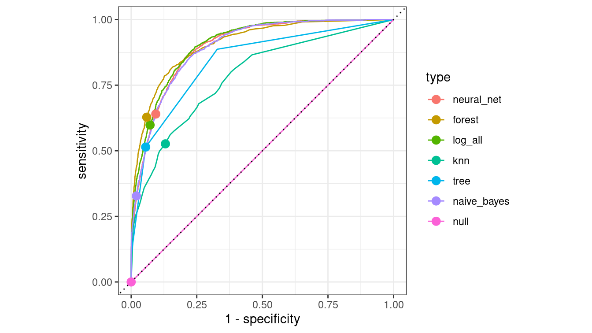
Figure 11.8: Comparison of ROC curves across five models on the Census testing data. The null model has a true positive rate of zero and lies along the diagonal. The naïve Bayes model has a lower true positive rate than the other models. The random forest may be the best overall performer, as its curve lies furthest from the diagonal.
11.4 Extended example: Who has diabetes this time?
Recall the example about diabetes in Section 10.4.
library(NHANES)
people <- NHANES %>%
select(Age, Gender, Diabetes, BMI, HHIncome, PhysActive) %>%
drop_na()
glimpse(people)Rows: 7,555
Columns: 6
$ Age <int> 34, 34, 34, 49, 45, 45, 45, 66, 58, 54, 58, 50, 33, 60,…
$ Gender <fct> male, male, male, female, female, female, female, male,…
$ Diabetes <fct> No, No, No, No, No, No, No, No, No, No, No, No, No, No,…
$ BMI <dbl> 32.22, 32.22, 32.22, 30.57, 27.24, 27.24, 27.24, 23.67,…
$ HHIncome <fct> 25000-34999, 25000-34999, 25000-34999, 35000-44999, 750…
$ PhysActive <fct> No, No, No, No, Yes, Yes, Yes, Yes, Yes, Yes, Yes, Yes,…people %>%
group_by(Diabetes) %>%
count() %>%
mutate(pct = n / nrow(people))# A tibble: 2 × 3
# Groups: Diabetes [2]
Diabetes n pct
<fct> <int> <dbl>
1 No 6871 0.909
2 Yes 684 0.0905We illustrate the use of a decision tree using all of the variables except for household income in Figure 11.9. From the original data shown in Figure 11.10, it appears that older people, and those with higher BMIs, are more likely to have diabetes.
mod_diabetes <- decision_tree(mode = "classification") %>%
set_engine(
"rpart",
control = rpart.control(cp = 0.005, minbucket = 30)
) %>%
fit(Diabetes ~ Age + BMI + Gender + PhysActive, data = people)
mod_diabetesparsnip model object
Fit time: 80ms
n= 7555
node), split, n, loss, yval, (yprob)
* denotes terminal node
1) root 7555 684 No (0.909464 0.090536)
2) Age< 52.5 5092 188 No (0.963079 0.036921) *
3) Age>=52.5 2463 496 No (0.798620 0.201380)
6) BMI< 39.985 2301 416 No (0.819209 0.180791) *
7) BMI>=39.985 162 80 No (0.506173 0.493827)
14) Age>=67.5 50 18 No (0.640000 0.360000) *
15) Age< 67.5 112 50 Yes (0.446429 0.553571)
30) Age< 60.5 71 30 No (0.577465 0.422535) *
31) Age>=60.5 41 9 Yes (0.219512 0.780488) *plot(as.party(mod_diabetes$fit))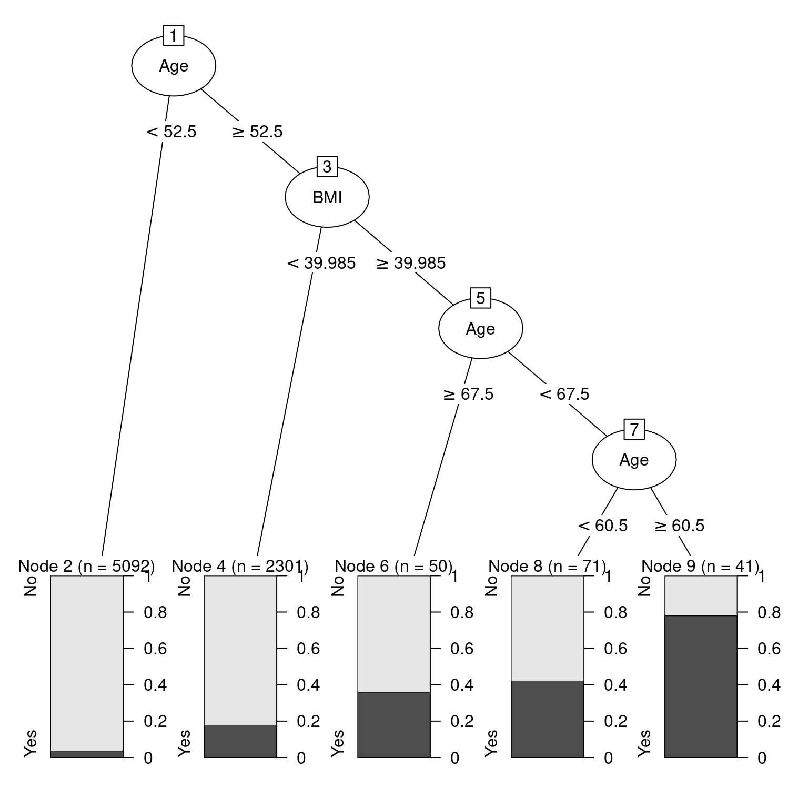
Figure 11.9: Illustration of decision tree for diabetes.
If you are 52 or younger, then you very likely do not have diabetes. However, if you are 53 or older, your risk is higher. If your BMI is above 40—indicating obesity—then your risk increases again. Strangely—and this may be evidence of overfitting—your risk is highest if you are between 61 and 67 years old. This partition of the data is overlaid on Figure 11.10.
segments <- tribble(
~Age, ~xend, ~BMI, ~yend,
52.5, 100, 39.985, 39.985,
67.5, 67.5, 39.985, Inf,
60.5, 60.5, 39.985, Inf
)
ggplot(data = people, aes(x = Age, y = BMI)) +
geom_count(aes(color = Diabetes), alpha = 0.5) +
geom_vline(xintercept = 52.5) +
geom_segment(
data = segments,
aes(xend = xend, yend = yend)
) +
scale_fill_gradient(low = "white", high = "red") +
scale_color_manual(values = c("gold", "black")) +
annotate(
"rect", fill = "blue", alpha = 0.1,
xmin = 60.5, xmax = 67.5, ymin = 39.985, ymax = Inf
)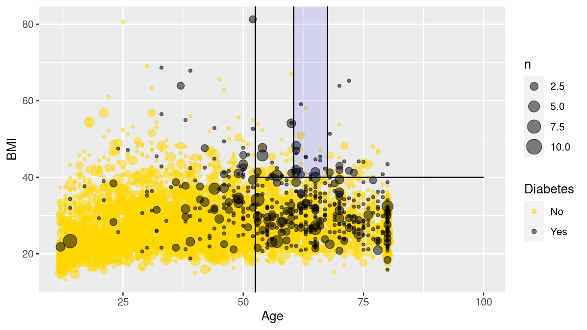
Figure 11.10: Scatterplot of age against BMI for individuals in the NHANES data set. The black dots represent a collection of people with diabetes, while the gold dots represent those without diabetes.
Figure 11.10 is a nice way to visualize a complex model. We have plotted our data in two quantitative dimensions (Age and BMI) while using color to represent our binary response variable (Diabetes). The decision tree simply partitions this two-dimensional space into axis-parallel rectangles. The model makes the same prediction for all observations within each rectangle. It is not hard to imagine—although it is hard to draw—how this recursive partitioning will scale to higher dimensions.
Note, however, that Figure 11.10 provides a clear illustration of the strengths and weaknesses of models based on recursive partitioning. These types of models can only produce axis-parallel rectangles in which all points in each rectangle receive the same prediction. This makes these models relatively easy to understand and apply, but it is not hard to imagine a situation in which they might perform miserably (e.g., what if the relationship was non-linear?). Here again, this underscores the importance of visualizing your model in the data space (Hadley Wickham, Cook, and Hofmann 2015) as demonstrated in Figure 11.10.
11.4.1 Comparing all models
We close the loop by extending this model visualization exerise to all of our models.
Once again, we tile the \((Age, BMI)\)-plane with a fine grid of 10,000 points.
library(modelr)
fake_grid <- data_grid(
people,
Age = seq_range(Age, 100),
BMI = seq_range(BMI, 100)
)Next, we evaluate each of our six models on each grid point, taking care to retrieve not the classification itself, but the probability of having diabetes.
form <- as.formula("Diabetes ~ Age + BMI")
dmod_null <- logistic_reg(mode = "classification") %>%
set_engine("glm")
dmod_tree <- decision_tree(mode = "classification") %>%
set_engine("rpart", control = rpart.control(cp = 0.005, minbucket = 30))
dmod_forest <- rand_forest(
mode = "classification",
trees = 201,
mtry = 2
) %>%
set_engine("randomForest")
dmod_knn <- nearest_neighbor(mode = "classification", neighbors = 5) %>%
set_engine("kknn", scale = TRUE)
dmod_nnet <- mlp(mode = "classification", hidden_units = 6) %>%
set_engine("nnet")
dmod_nb <- naive_Bayes() %>%
set_engine("klaR")
bmi_mods <- tibble(
type = c(
"Logistic Regression", "Decision Tree", "Random Forest",
"k-Nearest-Neighbor", "Neural Network", "Naive Bayes"
),
spec = list(
dmod_null, dmod_tree, dmod_forest, dmod_knn, dmod_nnet, dmod_nb
),
mod = map(spec, fit, form, data = people),
y_hat = map(mod, predict, new_data = fake_grid, type = "prob")
)
bmi_mods <- bmi_mods %>%
mutate(
X = list(fake_grid),
yX = map2(y_hat, X, bind_cols)
)
res <- bmi_mods %>%
select(type, yX) %>%
unnest(cols = yX)
res# A tibble: 60,000 × 5
type .pred_No .pred_Yes Age BMI
<chr> <dbl> <dbl> <dbl> <dbl>
1 Logistic Regression 0.998 0.00234 12 13.3
2 Logistic Regression 0.998 0.00249 12 14.0
3 Logistic Regression 0.997 0.00265 12 14.7
4 Logistic Regression 0.997 0.00282 12 15.4
5 Logistic Regression 0.997 0.00300 12 16.0
6 Logistic Regression 0.997 0.00319 12 16.7
7 Logistic Regression 0.997 0.00340 12 17.4
8 Logistic Regression 0.996 0.00361 12 18.1
9 Logistic Regression 0.996 0.00384 12 18.8
10 Logistic Regression 0.996 0.00409 12 19.5
# … with 59,990 more rowsFigure 11.11 illustrates each model in the data space. The differences between the models are striking. The rigidity of the decision tree is apparent, especially relative to the flexibility of the \(k\)-NN model. The \(k\)-NN model and the random forest have similar flexibility, but regions in the former are based on polygons, while regions in the latter are based on rectangles. Making \(k\) larger would result in smoother \(k\)-NN predictions, while making \(k\) smaller would make the predictions more bold. The logistic regression model makes predictions with a smooth grade, while the naïve Bayes model produces a non-linear horizon. The neural network has made relatively uniform predictions in this case.
ggplot(data = res, aes(x = Age, y = BMI)) +
geom_tile(aes(fill = .pred_Yes), color = NA) +
geom_count(
data = people,
aes(color = Diabetes), alpha = 0.4
) +
scale_fill_gradient("Prob of\nDiabetes", low = "white", high = "red") +
scale_color_manual(values = c("gold", "black")) +
scale_size(range = c(0, 2)) +
scale_x_continuous(expand = c(0.02,0)) +
scale_y_continuous(expand = c(0.02,0)) +
facet_wrap(~type, ncol = 2)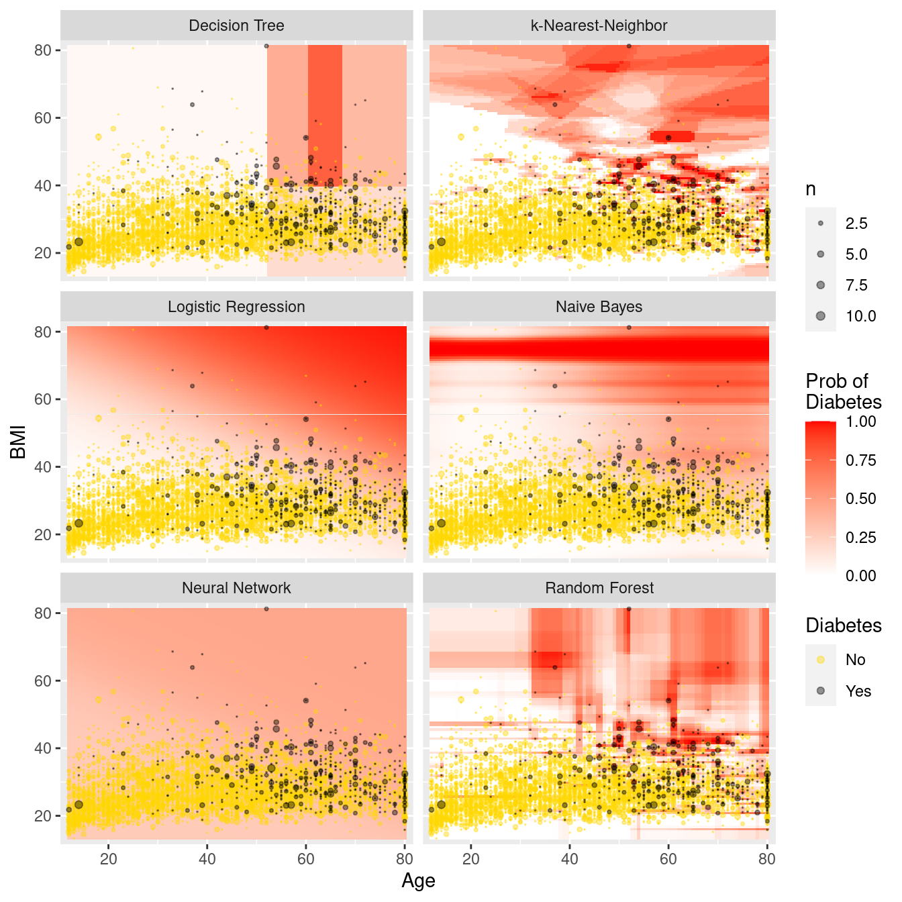
Figure 11.11: Comparison of predictive models in the data space. Note the rigidity of the decision tree, the flexibility of \(k\)-NN and the random forest, and the bold predictions of \(k\)-NN.
11.5 Regularization
Regularization is a technique where constraints are added to a regression model to prevent overfitting. Two techniques for regularization include ridge regression and the LASSO (least absolute shrinkage and selection operator). Instead of fitting a model that minimizes \(\sum_{i=1}^n (y - \hat{y})^2\) where \(\hat{y}=\bf{X}'\beta\), ridge regression adds a constraint that \(\sum_{j=1}^p \beta_j^2 \leq c_1\) and the LASSO imposes the constraint that \(\sum_{j=1}^p |\beta_j| \leq c_2\), for some constants \(c_1\) and \(c_2\).
These methods are considered part of statistical or machine learning since they automate model selection by shrinking coefficients (for ridge regression) or retaining predictors (for the LASSO) automatically. Such shrinkage may induce bias but decrease variability. These regularization methods are particularly helpful when the set of predictors is large.
To help illustrate this process we consider a model for the flight delays example introduced in Chapter 9. Here we are interested in arrival delays for flights from the two New York City airports that service California (EWR and JFK) to four California airports.
library(nycflights13)
California <- flights %>%
filter(
dest %in% c("LAX", "SFO", "OAK", "SJC"),
!is.na(arr_delay)
) %>%
mutate(
day = as.Date(time_hour),
dow = as.character(lubridate::wday(day, label = TRUE)),
month = as.factor(month),
hour = as.factor(hour)
)
dim(California)[1] 29836 20We begin by splitting the data into a training set (70%) and testing set (30%).
library(broom)
set.seed(386)
California_split <- initial_split(California, prop = 0.7)
California_train <- training(California_split)
California_test <- testing(California_split)Now we can build a model that includes variables we want to use to explain arrival delay, including hour of day, originating airport, arrival airport, carrier, month of the year, day of week, plus interactions between destination and day of week and month.
flight_model <- formula(
"arr_delay ~ origin + dest + hour + carrier + month + dow")
mod_reg <- linear_reg() %>%
set_engine("lm") %>%
fit(flight_model, data = California_train)
tidy(mod_reg) %>%
head(4)# A tibble: 4 × 5
term estimate std.error statistic p.value
<chr> <dbl> <dbl> <dbl> <dbl>
1 (Intercept) -16.0 6.12 -2.61 0.00905
2 originJFK 2.88 0.783 3.67 0.000239
3 destOAK -4.61 3.10 -1.49 0.136
4 destSFO 1.89 0.620 3.05 0.00227 Our regression coefficient for originJFK indicates that controlling for other factors, we would anticipate an additional 3.1-minute delay flying from JFK compared to EWR (Newark), the reference airport.
California_test %>%
select(arr_delay) %>%
bind_cols(predict(mod_reg, new_data = California_test)) %>%
metrics(truth = arr_delay, estimate = .pred)# A tibble: 3 × 3
.metric .estimator .estimate
<chr> <chr> <dbl>
1 rmse standard 42.6
2 rsq standard 0.0870
3 mae standard 26.1 Next we fit a LASSO model to the same data.
mod_lasso <- linear_reg(penalty = 0.01, mixture = 1) %>%
set_engine("glmnet") %>%
fit(flight_model, data = California_train)
tidy(mod_lasso) %>%
head(4)# A tibble: 4 × 3
term estimate penalty
<chr> <dbl> <dbl>
1 (Intercept) -11.4 0.01
2 originJFK 2.78 0.01
3 destOAK -4.40 0.01
4 destSFO 1.88 0.01We see that the coefficients for the LASSO tend to be attenuated slightly towards 0 (e.g., originJFK has shifted from 3.08 to 2.98).
California_test %>%
select(arr_delay) %>%
bind_cols(predict(mod_lasso, new_data = California_test)) %>%
metrics(truth = arr_delay, estimate = .pred)# A tibble: 3 × 3
.metric .estimator .estimate
<chr> <chr> <dbl>
1 rmse standard 42.6
2 rsq standard 0.0871
3 mae standard 26.1 In this example, the LASSO hasn’t improved the performance of our model on the test data. In situations where there are many more predictors and the model may be overfit, it will tend to do better.
11.6 Further resources
G. James et al. (2013) provides an accessible introduction to these topics (see http://www-bcf.usc.edu/~gareth/ISL). A graduate-level version of Hastie, Tibshirani, and Friedman (2009) is freely downloadable at http://www-stat.stanford.edu/~tibs/ElemStatLearn. Another helpful source is Tan, Steinbach, and Kumar (2006), which has more of a computer science flavor. Breiman (2001) is a classic paper that describes two cultures in statistics: prediction and modeling. Bradley Efron (2020) offers a more recent perspective.
The ctree() function from the partykit package builds a recursive partitioning model using conditional inference trees.
The functionality is similar to rpart() but uses different criteria to determine the splits. The partykit package also includes a cforest() function.
The caret package provides a number of useful functions for training and plotting classification and regression models.
The glmnet and lars packages include support for regularization methods.
The RWeka package provides an R interface to the comprehensive Weka machine learning library, which is written in Java.
11.7 Exercises
Problem 1 (Easy): Use the HELPrct data from the mosaicData to fit a tree model to the following predictors: age, sex, cesd, and substance.
Plot the resulting tree and interpret the results.
What is the accuracy of your decision tree?
Problem 2 (Medium): Fit a series of supervised learning models to predict arrival delays for flights from
New York to SFO using the nycflights13 package. How do the conclusions change from
the multiple regression model presented in the Statistical Foundations chapter?
Problem 3 (Medium): Use the College Scorecard Data from the CollegeScorecard package to model student debt as a function of institutional characteristics using the techniques described in this chapter. Compare and contrast results from at least three methods.
# remotes::install_github("Amherst-Statistics/CollegeScorecard")
library(CollegeScorecard)Problem 4 (Medium): The nasaweather package contains data about tropical storms from 1995–2005. Consider the scatterplot between the wind speed and pressure of these storms shown below.
library(mdsr)
library(nasaweather)
ggplot(data = storms, aes(x = pressure, y = wind, color = type)) +
geom_point(alpha = 0.5)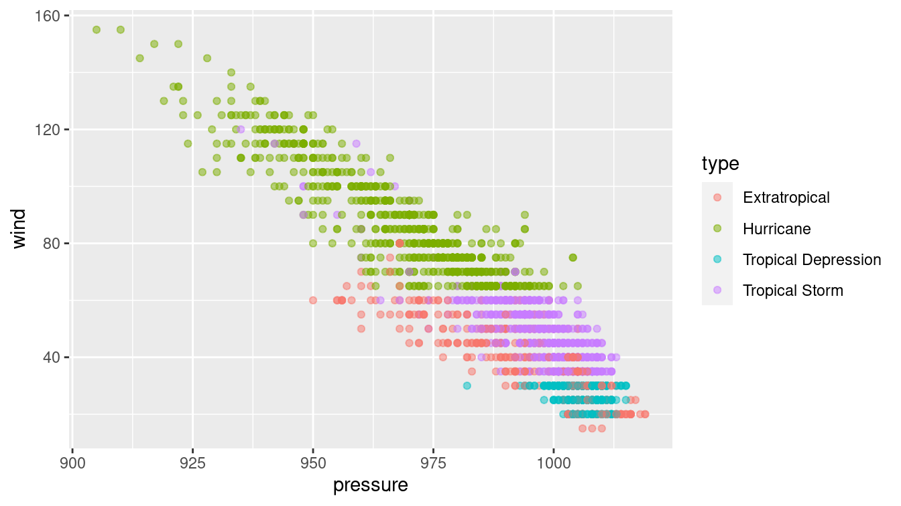
The type of storm is present in the data, and four types are given: extratropical, hurricane, tropical depression, and tropical storm. There are complicated and not terribly precise definitions for storm type. Build a classifier for the type of each storm as a function of its wind speed and pressure.
Why would a decision tree make a particularly good classifier for these data? Visualize your classifier in the data space.
Problem 5 (Medium): Pre-natal care has been shown to be associated with better health of babies and mothers. Use the NHANES data set in the NHANES package to develop a predictive model for the PregnantNow variable. What did you learn about who is pregnant?
Problem 6 (Hard): The ability to get a good night’s sleep is correlated with many positive health outcomes. The NHANES data set contains a binary variable SleepTrouble that indicates whether each person has trouble sleeping.
For each of the following models:
- Build a classifier for SleepTrouble
- Report its effectiveness on the NHANES training data
- Make an appropriate visualization of the model
- Interpret the results. What have you learned about people’s sleeping habits?
You may use whatever variable you like, except for SleepHrsNight.
- Null model
- Logistic regression
- Decision tree
- Random forest
- Neural network
- Naive Bayes
- \(k\)-NN
- Repeat the previous exercise, but now use the quantitative response variable
SleepHrsNight. Build and interpret the following models:
- Null model
- Multiple regression
- Regression tree
- Random forest
- Ridge regression
- LASSO
Repeat either of the previous exercises, but this time first separate the
NHANESdata set uniformly at random into 75% training and 25% testing sets. Compare the effectiveness of each model on training vs. testing data.Repeat the first exercise in part (a), but for the variable
PregnantNow. What did you learn about who is pregnant?
11.8 Supplementary exercises
Available at https://mdsr-book.github.io/mdsr2e/ch-learningI.html#learningI-online-exercises
No exercises found
More precisely, regression trees are analogous to decision trees, but with a quantitative response variable. The acronym CART stands for “classification and regression trees.”↩︎
Specifically, the problem of determining the optimal decision tree is NP-complete, meaning that it does not have a polynomial-time solution unless \(P = NP\).↩︎
For simplicity, we focus on a binary outcome in this chapter, but classifiers can generalize to any number of discrete response values.↩︎
In section 11.2, we discuss why this particular optimization criterion might not be the wisest choice.↩︎